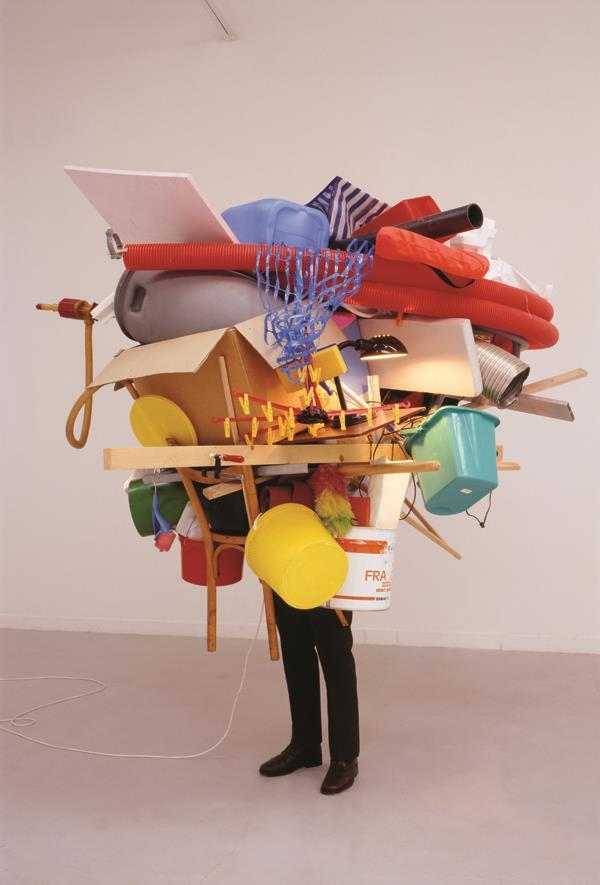

Le Parti pris des choses - Ponge
1 - Mes notes au fur et à mesure de ma lecture
- “Le parti pris des choses” c’est une personnification de “choses” ça pourrait signifier que le but du recueil est la personnification d’objets.
- Je suis assez mal entré dans la lecture, je n’ai pas trouvé au premier abord le plaisir de lire un poème, je ne comprenais pas réellement le sens.
- J’ai tout d’abord moins apprécié le fait qu’il n’y ait pas de rime mais j’ai su l’apprécier quand j’ai commencé à comprendre le but du recueil.
- Tous ses poèmes sont sur un objet banal il fait parfois l’éloge, transformant donc la boue en or.
2 - Mes citations
Citation | Thème |
|---|
L'aigreur empreinte sur son visage suffirait pour faire tourner une vendange ... | Boue |
Se noie dans son aliment | Boue |
Une petite torche beaucoup moins lumineuse que parfumée | Alchimie |
Comme l’éponge il y a dans l’orange une aspiration a reprendre contenance apres avoir subi l’épreuve de l’expression | Boue |
Les rois ne touchent pas aux portes. Ils ne connaissent pas ce bonheur. | Alchimie |
La surface du pain donne cette impression quasi panoramique | Alchimie |
La mer jusqu'à l'approche de ses limites est une chose simple qui se répète flot par flot.
| Désespoir |
Toujours plus bas telle semble être sa devise. Elle m'échappe et cependant me marque | Désespoir |
Sans aucun souci du lendemain, dans un bureau clair et moderne, je passe mes jours. | Désespoir |
Près de la place Maubert, à l'endroit où chaque matin de bonne heure j'attends l'autobus, trois boutiques voisinent: Bijouterie, Bois et Charbons, Boucherie. | Alchimie |
On devient dupe de tout. On est définitivement fait, bonard. Il faut d'abord parler, et à ce moment peu importe, dire n'importe quoi. | Boue |
Tout le secret du bonheur du Contemplateur est dans son refus de considérer comme un mal l'envahissement de sa personnalité par les choses. | Alchimie |
Lui est encore là, à l'abri, avec, dans une poche de sa vareuse, un carnet, un gros crayon, et le papier de la caisse des retraites. | Désespoir |
Mesdames et messieurs, l'éclairage est oblique. Si quelqu'un fait des gestes derrière moi qu'on m'avertisse. Je ne suis pas un bouffon. | Boue |
3 - Mes impressions de lecture
- Le poème que j’ai préféré est "Végétation", tout d’abord; car le thème principal est une nature agité et magnifique, Ici Ponge nous montre notamment l’invention des barrages hydrauliques, et il parle de la pluie d’une façon très belle. Il décrit la végétation d’une façon élégante et sa fonction. Ponge m’a intrigué car il décrit la végétation dans tous ses aspects mais je n’en comprends pas le but malgré le fait que ce soit magnifique. On peut voir que l'eau est la source de la végétation ainsi que de l’agitation.
Flocon Solitaire
Le ciel grisé, tout comme la roche brisée par cet éclair transcendant, est à la fois infini mais aussi démoli. Mais dans ce chaos, un flocon naissant, frôlant les magnifiques et meurtrières gouttes d’eau tout comme il le fait avec perfection.
Cependant, il chute tel un ange déchu tombé du ciel qui se fait ravager, dans une longue descente humiliante mais splendide et majestueuse. Pour ensuite toucher la terre élégamment et ainsi se morfondre sur le sol, puis disparaître lentement et misérablement.
4 - Mon parcours artistique et culturel
- Le cubisme est un mouvement artistique du début du XXe siècle. Les artistes cubistes proposent de représenter les objets et les corps en les décomposant par formes géométriques simples et avec peu de courbes. Ils cherchent à représenter le réel en le géométrisant mais sans atteindre l’abstrait. Le cubisme a grandement changé avec la Grande Guerre. Les tableaux suivants renouvellent le langage pictural de leur époque d’une part car il est totalement différent, par exemple il est opposé à l'expressionnisme et au fauvisme, mais aussi car il montre une nouvelle vision novatrice de la réalité.
Nicolas de Staël s’approprie le genre de la nature morte, on peut le voir au fond sombre inhabituel.
- Le concepte du recueil de poèmes de Francis Ponge est la description d’un poème avec un autre point de vue de la réalité, c’est pourquoi j’ai choisi la 2e oeuvre: Spiral, objets trouvés, par Tony Cragg, car il représente des objets banals avec un point de vue différent.
